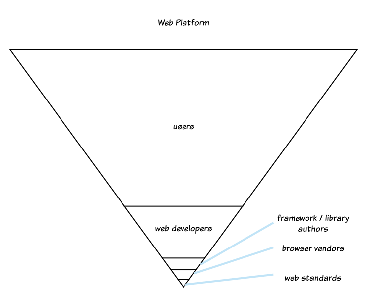
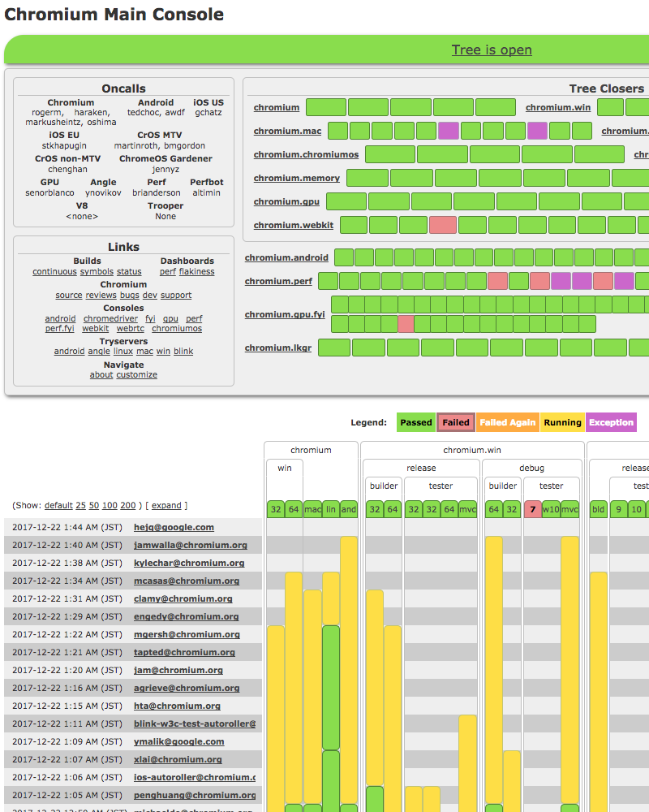

この記事は Chromium Browser アドベントカレンダー 25 日目の記事です。
昨日の記事では主にデータ構造とアルゴリズムに注目しましたが、この記事では、実際に行われているソフトウェアエンジニアリングを通じて上流工程 (Web 標準の策定) から下流工程 (ブラウザの開発)まで Web のつくりかたを雰囲気で理解するのを目的としています。
この記事の想定読者は一般の Web 開発者やソフトウェアエンジニアです。
記事へのフィードバック・Typo などを発見しましたら、GitHub Issue の方へお願いします。
Web プラットフォーム
Web プラットフォームは極めてユーザー数が多いプラットフォームです。Web で情報を得ている人や Web で情報を発信をしている人などもユーザーとみなせば、極端な言い方をすれば地球上のほぼ全員がこのプラットフォームのエコシステムの一員です。

Web 開発者の数はユーザーの数と比べればぐっと少ないです。ブラウザをつくっている人はもっと少ないです。
Web 標準 (Web Standards)
Web プラットフォームは仕様と実装がわかれています。仕様に対して複数の実装（ブラウザ）があるのが大きな特徴のひとつです。
Web がどう動くべきかを記した「仕様」は「Web Standard」(Web 標準) と呼ばれています有名なところでは HTML の仕様である HTML Standard、DOM の仕様である DOM Standard などが挙げられます。
ブラウザベンダ (Browser Vendor)
Web 標準にもとづいて、その実装としてのブラウザをつくる組織・企業のことをブラウザベンダといいます。
メジャーなブラウザとしては、Chrome、Safari、Firefox、Edge などがあります。それぞれ、Google、Apple、Mozilla、Microsoft が主に開発しています。
Web 開発者は「実装が複数あることはわずらわしい」と考えるかもしれませんが、複数の実装があることこそが何より Web を Web 足らしめている大きな特徴です。ブラウザベンダ間の健全な競争こそがプラットフォームを進化させます。
Web のつくりかた: Web 標準編
ここでは私が主に関わっている DOM Standard (Shadow DOM を含む) と HTML Standard に絞ります。DOM Standard、HTML Standard ともに GitHub 上で管理されています。
DOM Standard
- DOM 仕様: DOM Standard
- GitHub: whatwg/dom
- Issues: Open Issues
- コミット: whatawg/dom/commits
- テスト: web-platform-tests/dom、web-platform-tests/shadow-dom
HTML Standard
- HTML 仕様: HTML Standard
- GitHub: whatwg/html
- Issues: Open Issues
- コミット: whatawg/html/commits
- テスト: web-platform-tests/html
Web 標準の更新のしかた
基本的な流れは以下のとおりです。
- GitHub 上で Issue をあげる
- Issee 上で議論をし関係者間で同意をとる
- PR (Pull Request) を送る
- 必要に応じて テスト (Web Platorm Test) を書く
- レビューを受けて Editor に Merge される
通常のソフトウェア開発プロジェクトと大きな違いはありません。
WONTFIX / Close されやすい Issue
Web 標準に貢献しているのはブラウザベンダの関係者が多いですが、基本的には誰でも参加できます。メジャーな JavaScript のフレームワーク・ライブラリの開発者たちが新しいアイデアや要望を出してくることも多いです。
ただし、以下のような Issue は 取り込まれることなくそのまま WONTFIX で Close される可能性が高いでしょう。
-
具体的ではない
例: 「XX ができたらいいなー」
このような Issue は「具体的なアイデアは？」と求められるでしょう。またアイデアだけでは十分ではなく、具体的なプロセシング・モデルがきちんと定義されているのが望ましいです。議論が生産的になります。
-
ブラウザベンダが実装に関心がない
実装されることのない仕様は負債になります。このような Issue も Close されてしまうでしょう。ブラウザベンダが思わず実装したくなるような仕様を提案するとよいです。
-
Web を壊す
残念ながらほとんどの提案が後方互換性を壊すような提案です。ブラウザベンダは後方互換性を壊すような提案には極めて慎重です。よほどのことがないと反対されるでしょう。
-
実装が困難
現実的に実装が可能なアイデアでないと Close されるでしょう。これについてはブラウザベンダの人に聞くのがよいでしょう。
-
最初だけ議論が盛り上がる
これもよくあるパターンです。新しい Issue が上がった直後は議論が活発におこなわれますが、その後まったく関心がなくなるというのは、結局その問題を本当に解決したいとは誰も思っていないのです。
「いきなり、Issue を上げるのはちょっと..」「そんなに具体的じゃないけど、いいアイデアを思いついた」そのようなときは直接 Web 標準 の GitHub に Issue をあげるのではなく、WICG (Web Platform Incubator Community Group) をオススメします。こちらはより「よちよち歩き」なアイデアを議論するための場所です。
ブラウザベンダが気にするところ
すべてのブラウザベンダの同意をとるのは大変です。簡単な修正は特に問題なく通ります。しかし、大きめな変更はブラウザベンダのその分野の代表者の同意をとる必要があります。私も含めてかんたんには説得されません。実装者が仕様の詳細を決めるにあたって気にすることを以下にあげます。
-
本当に Web プラットフォームでネイティブにサポートする必要があるかどうか
新しいプリミティブとしてプラットフォームに追加する価値があるかどうかが問われます。 JavaScript のレイヤーで簡単に実現可能なマイナーなものに関してはまず通らないでしょう。逆に今まで JavaScript のレイヤーで行っていたものの、プラットフォームに追加することによって大幅にパフォーマンスが改善されることが期待されるならば通りやすいでしょう。ブラウザベンダはプラットフォームの速度のボトルネックとなっている古い API を追放したがっています。
-
ユースケースがクリアかどうか
間違いなくユースケースについては聞かれます。実際に Web 開発者が抱えている問題が解決される？
また誰もが最初からほんとによい仕様かどうかは 100% 自信があるわけではありません。実際にブラウザ上で C++ で実装してみないとなんともいえない場合もよくあります。「とりあえず」実装してみてユーザーに使用してもらい、フィードバックを受けて改善していくといったフィードバックループはとても大事です。
Web プラットフォームテスト (Web Plaform Test)
Web 標準を変更するときは同時にテスト (Web Platform Test) も書くことも要求されます。詳しくは web-platform-tests を参照ください。テストは各ブラウザで共有されます。次のようなメリットがあります。
-
ブラウザ間の互換性の向上
-
ブラウザベンダの負担の軽減。各ブラウザベンダが独自にテストを書く必要性がなくなります。
-
生きた仕様書
Web の仕様書を読んでも「いったいなにをいっているのかわからない」ということは多いでしょう。はっきりと動作が定義されたテストはコミュニケーションツールとしての役割を果たします。仕様の議論においても「具体的な動作がいまいちピンとこないです。ちょっとテストを書いてみてくれない？」とお願いされることは多いでしょう。
「いきなり Web 標準に貢献するのはちょっと...」という人でもまずはテストから貢献するとよいでしょう。
名前の衝突 / 後方互換製を壊す恐れ
新しい Web API や新しいエレメントを Web に入れるときは、その名前がすでに Web 上で広く使用されていないかどうかチェックする必要があります。たとえ「衝突する恐れのある名前を勝手に使用している行儀の悪い Web サイト」であろうと、既存の Web サイトを壊すわけにはいかないからです。
「Web を grep」 するには httparchive などが使用できます。Top 1,000,000 サイトのアーカイブから検索できます。
SELECT page, count(*)
FROM [httparchive:har.2017_09_01_chrome_requests_bodies]
WHERE REGEXP_MATCH(body, r'<shadowroot>')
GROUP BY page
いつまでたっても実装されない仕様の取り扱い
仕様から削除します。仕様にアルゴリズムが載ったものの 10 年 たってもどこのブラウザも実装していないのなら、それは勇気をもって削除するべきです。削除の前に各ブラウザベンダの状況や意思は確認します。
逆に 2 つ以上のブラウザですでに実装されている API については削除したくてもしずらいです。しかし実はどちらも削除したがっているということも少なくなく「これ削除したいんだけど、どう？」と聞くと「あー、実は削除したかったんだよね。なーんだ、そう思っていたんだ。早くいってくれればいいのに！削除しましょう！」となることもあります。そのときは歩調を合わせて削除に向かいます。
WHATWG
今月 WHATWG が IPR を更新 したため、ようやく Microsoft が WHATWG に参加できる見通しになりました。メジャーなブラウザベンダのなかではこれまで Microsoft だけが今まで特許ポリシーのため WHATWG に参加できませんでしたが、これでようやくすべてのメジャーブラウザが DOM や HTML については WHATWG で一緒に仕事をすることができるようになります。
個人的には Microsoft のためだけに DOM Standard とは別にメンテナンスしていた「Shadow DOM 仕様」をこれで削除することが可能になりとても負担が減ります。
HTML 5 仕様の意義については、W3C に尋ねてください。
Web のつくりかた: ブラウザ編
さて Web 標準についてはもう十分でしょう。ここからは楽しい実装の話にうつりましょう。どんなに素晴らしい仕様も実装がなければなんの意味もありません。
この記事では Chrome のレンダリングエンジンである Blink における実装の話をします。
新機能の実装 / 新しい Web API をプラットフォームに追加する
基本的な流れは以下のようになります。
-
公開 ML (blink-dev) に "Intent to implement: XXX" メールを出す （例: Shadow DOM v1 の場合）
「機能を実装する意思があること」を ML 上で宣言します。この ML は他のブラウザベンダの人たちも見ていて意見を交換することもあります。実装することが本当に Web のためになるのか？他のブラウザベンダの状況・実装の方針はどうか？などを話し合います。
-
実装する
実装に時間がかる大きめな機能は、ランタイムフラグを使用して機能を「デフォルトではオフ」の状態で開発を進めます。
-
公開 ML (blink-dev) に "Intent to ship: XXX" メールを出す (例: Shadow DOM v1 の場合)
ship (シップ) というのは、実際にその機能をデフォルトで有効にすることを指します。ランタイムフラグで用いて開発を進めていた場合は、ランタイムフラグを「オン」にするだけです。 ship には 3 人以上の API Owners からの LGTM が必要です。
既存の機能の削除 / 既存の Web API をプラットフォームから削除する
「あたらしい API を追加する」のと同じくらいプラットフォームにとって大事なことは「現在すでに使用されている API をプラットフォームから削除する」ことです。特に Web プラットフォームでは多くの Web サイトが「分散」しており、プラットフォームの作成者が直接コントロールできるわけではありません。「削除」はとても大変な道のりになりがちです。
Web プラットフォームではこの戦略が使えません。どうしても伝わるまで時間がかかってしまいます。
既存の機能を削除する基本的な流れは以下のようになります。
-
公開 ML (blink-dev) に "Intent to deprecate: XXX" メールを出す（例: /deep/ の場合)
「XXX 機能を非推奨にする」と宣言します。あくまで非推奨にするだけでこの時点では削除されません。 Web 開発者が非推奨となった API を使用した場合、DevTool の Console 上に警告メッセージがでることでしょう。
-
使用率が下がるのをまつ
個々の機能・API の実際の Web における使用率をトラッキングしています (例: /deep/ and ::shadow の場合)。一定のしきい値を下回るまで待ちます。
-
公開 ML (blink-dev) に "Intent to remove: XXX" メールを出す (例: /deep/ の場合)。
実際に削除することを宣言します。LGTM が必要です。
これらはあくまで基本的なルールにすぎません。実際は各ケースに応じて柔軟に判断することが多いです。なにより大事なのは Web サイトのオーナーとのコミュニケーションです。
開発ツール・インフラ
Chrome の開発はそのスケールのため、既存のツールをそのまま使用するのが難しいケースが多いです。そのため独自に発展した開発インフラを一部に使用しています。GitHub 上で PR を送るといったスタイルではありません。
開発インフラについては過去の記事などでも説明されていますので、ここではコメントとともに軽く触れます。
CL
Chrome ではパッチなどのコミットの単位を CL (Change List: チェンジリスト)と呼んでいます。これはもともと Google 内部のバージョン管理システムで使用されていた用語であり、そのまま伝統的に使用されています。
ビルド
GN と Ninja を使用しています。 Ninja のほうは最近は Chrome 以外の他のプロジェクトでも使用されることが増えてきましたね。
クラウドコンパイル
Chrome はコンパイル対象のファイルが数万あります。普通にビルドするとかなりの時間がかかるでしょう。
Google の人は Goma (クラウド分散コンパイル)のインフラを使用することができます。私の環境だと "-j 1024"（並列度: 1024) のフルビルドで 3 分ほどです。インクリメンタルビルドだと 10 秒以下です。
Opera の人たちは社内で分散コンパイルのインフラ (distcc) を使用しているそうです。
開発環境
Linux 上で開発している人が多いです。Windows 上の Visual Studio で開発している人もいます。
デバッグ
gdb や print デバッグなどが主流です。Windows を使う人の主な理由は、Visual Studio 上でデバッグできることだそうです。そのほか、valgrind、ASAN (AddressSanitizer) なども使用しています。
バージョン管理: Git
Git を使用していますが、直接リモートレポジトリに push することはありません。コミットキュー経由でコミットします。コミットのヒストリーは直線です。
ブランチはリリースブランチを除いて基本的に使用しません。
もちろん各開発者はローカルでは git のブランチを使用します。それぞれの CL ごとにローカルではブランチをつくります。git merge、git rebase などもローカルでは行いますが、サーバ上のブランチにたいして行うことはまずありません。
Bug Tracking
Chrome のバグは crbug.com で管理されています。誰でもバグの報告が行えます。「Chrome のバグ？」と思える挙動にであったときはここで検索しましょう。
レビュー
レビューは Gerrit を使用しています。
ソフトウェアエンジニアリング / 実践しているプラクティス
Chrome の開発に必要な「スキル」は C++ 力、キレイなコードを書く能力、技術的コミュニケーション力、レビュー力など、ソフトウェアエンジニアとしての基本的な力があれば十分でしょう。
最初はよいメンターやレビューアーに恵まれることも大事です。
以下は一般的ではないかもしれませんが Chrome の開発文化で採用されている「よいプラクティス」です。
Always on ToT (常に先端に載っておく）
ToT とは 「Tip of Tree」の略で、メインブランチの先端のことを指します。リリースに対する緊急 Fix などを除いては、通常のコミットは常に ToT に対して行います。
Chrome のようにコミットが多いプロジェクト (1 日あたり数百) では、新機能の開発を下手にサーバ側でブランチを切って ToT 以外で行ってしまうと、さまざまなデメリットがあります。
-
「このブランチ一生マージできないのでは」問題。
-
ToT ブランチ上で起きているさまざまなリファクタリングの恩恵を受けることができなくなります。ToT で開発を続けているなら、他の開発者が自分の担当している箇所もどんどん変更していってくれますが、別ブランチを切ると全部自分で面倒を見なければいけません。
これらのデメリットがあるためサーバ側でブランチをきることはほぼありません。そのかわり無効にしておきたい開発中の機能などはランタイムフラグを使用してデフォルトではオフにしておきながら開発を進めます。
矛盾に聞こえるかもしれませんが、「Always on ToT」 は大規模なソフトウェアプロジェクトだからこそ重要であり、最近は、多くのプロジェクトで特にブランチを切ることなく、常にメインブランチに対して開発を進める方法が主流になっていると思います。
炭鉱のカナリア
Chrome は Canary、Dev、Stable の 3 つのチャネルがあります。 Canary 版とはいわゆる「ナイトリービルド」であり、小鳥の「カナリア」から名前がつけられています。昔は炭鉱などの危険な場所にはカナリアの入った鳥かごをもっていったそうです。カナリアは人間よりも有毒ガスに敏感であるため危険を早期に察知できます。 Chrome も多くの人が使用する Stable 版まで「被害」が及ぶまえに Canary 版で早期に危険を察知するようにしています。
短いリリースサイクル
Chrome はほぼ 6 週間ごとに Stable 版をリリースするという比較的短いリリースサイクルです。
このモデルは Chrome のみならず最近多くのソフトウェアプロジェクトで取り入られるようになりました。 Rust のようなプログラミング言語でもこのリリースモデルを採用しています。
リリースサイクルが短いことのメリットのひとつは開発者に与える心理です。「どうしてもこのマイルストーンに間に合わせたい！」と無理をすることがなくなります。「このマイルストーンを逃したとしてもまあ次は 6 週間後だから。そんなに大した問題ではない」と考えることができるようになります。
ビルドの再現性
ビルドの再現性を高めるために、なるべく開発ツールそのものも Chrome の関連レポジトリに一式いれるようにしています。たとえば、clang (C++ コンパイラ）自身もレポジトリに入っており、それをチェックアウトして使用します。
presubmit チェック / コーディングスタイル / コードフォーマットツール
CL をレビューに送る前に、さまざまな presubmit チェックを行うスクリプトが走ります。ソースコードのスタイルもチェック対象のひとつです。
Chromium では C++ については以下のスタイルガイドにそってチェックが行われます。
また、clang-format というソースコードフォーマットツールとそのプロジェクト設定ファイルもレポジトリに含まれています。ルールとして「clang-format でフォーマットされたコードのスタイルに対しては、レビューアーは一切文句をいってはいけません」があります。これにはデメリットもありますが、なによりレビュー上で起きがちな無駄なコミュニケーションコストを大幅に削減できるというメリットのほうがプロジェクト全体では大きいと思います。
Owner システム
レビューでは CL の修正箇所に応じた 「Owner」 から LGTM を受ける必要があります。 Owner は各フォルダの OWNERS ファイルに記載されています（例: core/dom/OWNERS）。 Owner システムはもともとは Google 内部で使用されていた仕組みですが、最近はいろいろな大規模プロジェクトにも輸出されていますね。
テスト
- C++ で書くユニットテスト (Google Test を使用）
- Layout Tests: エンジンの挙動のリグレッションテスト
- Web Platform Test: ブラウザベンダ間で共有されるテスト
- パフォーマンステスト: パフォーマンスのリグレッションテスト
等があります。それぞれ役割が異なるので使い分けましょう。挙動を変える CL ではまず間違いなくテストを書くことが求められます。
Bots (ボット) / CI (継続的インテグレーション)
Chrome は Windows、Linux、Mac、Android の各バージョン、さらにそれぞれについて 32 bit, 64 bit など多くのプラットフォームをサポートしています。それぞれのプラットフォームごとに専用 Bot がいて、継続的インテグレーションテストをしています。

ビルド・継続的インテグレーションテストはさまざまなステップがあり時間がかかります。そのため Chrome の 1 コミットごとに 1 サイクルを回すことができません。通常 1 サイクルには複数のコミットが含まれます。
コミットする前の CL に対しても Bots は利用できます。開発者は作成中の CL を「Try Bots に投げる」だけで自分の CL に対して全プラットフォーム上でビルド・テストが通るかを確認できます。
Sherriff (シェリフ: 保安官)
Googler かつ Chromium のコミッターの人は、ビルドの不具合やメモリやパフォーマンスのリグレッションなどを見張る仕事を当番制で行っています。この仕事のことを シェリフ（保安官） と呼んでいます。
ビルドの失敗やリグレッションの解決は、時間がたてばたつほど難しくなります。またどうしても機械的には判断できない場面があります。そのため問題を早期に解決するファーストアクションの責任を当番制で分担しています。シェリフの種類にもよりますが、2 クォーターごとに 1 回（2 日）ほどの頻度です。
Chrome の開発は世界中で 24 時間おこなわれているため、シェリフはそれぞれのタイムゾーンことに存在します。
Fuzzer
Fuzzer がどういうものか理解するには実際の例を見るのが早いでしょう。
<!DOCTYPE html>
<html xmlns="http://www.w3.org/1999/xhtml" xmlns:xsi="http://www.w3.org/2001/XMLSchema-instance">
<style type="text/css">
*{background-repeat:no-repeat;-webkit-animation-play-state:inherit;max-width:initial;pointer-events:visiblePainted;text-underline-mode:continuous;-webkit-animation-timing-function:initial;outline-style:solid;background-origin:padding;image-rendering:-webkit-positioned;font-size:xx-small;}
.CLASS0{box-pack:end;text-decoration:blue dotted;background-position-x:center;mask:inherit;-webkit-appearance:inherit;border:inherit !important;border-top:outset #824098;counter-reset:counter_4 000000000000000000000000000000002480000000000000000;-webkit-border-before-color:silver;column-width:-webkit-calc(7in);}
.CLASS1{-webkit-writing-mode:lr;min-width:0000184467440737095516230000em;border-right-style:solid;background-position-y:bottom;display:list-item;line-height:inherit;-webkit-nbsp-mode:space;float:none;transition-duration:7.8ms;visibility:inherit;}
.CLASS2{outline-width:medium;position:running(element_3);-webkit-appearance:normal;line-stacking-ruby:include-ruby;-webkit-column-break-inside:avoid;-webkit-column-count:auto;caption-side:top;text-align:justify "R*hg8jb\\&=C75%OIAn:f;3dC[J 4\DQ=/O8\\/\AQU}4;,Ib9n,#xY4@\A e7pQWQ$ejn\90/\(Qer._ wg\)\)qM\9tSdIS,:LoeqW#Uo<&C,=u4Qj'-<vHa.KH2,\\{'[?";counter-increment:none;counter-reset:counter_1;}
.CLASS3{font-variant:inherit;text-line-through-mode:skip-white-space;-webkit-animation-timing-function:step-end;font:icon;word-wrap:inherit;display:inherit;-webkit-wrap-through:wrap;text-align:inherit;pointer-events:visibleStroke;background-repeat:no-repeat;}
.CLASS4{-webkit-columns:auto 32768;content:inhibit;clear:none !important;margin-top:inherit;left:0.0000000004656612871205812690186753891551357104061636960068426561%;counter-reset:counter_2;column-rule-style:dotted;-webkit-column-span:1;transform-origin:3.5% bottom;vertical-align:text-bottom;}
.CLASS5{-webkit-animation-fill-mode:running;-webkit-overflow-scrolling:inherit;-webkit-transform-style:initial;-webkit-hyphens:manual;font-size:inherit;font-weight:300;word-break:break-all;font:status-bar;right:read-only;background-size:visual;}
.CLASS6{list-style-position:initial;-webkit-overflow-scrolling:inherit;-webkit-animation-play-state:running;background-clip:content-box;background-origin:border-box;border-image:inherit;-webkit-text-emphasis-position:over;-webkit-font-smoothing:antialiased;-webkit-animation-timing-function:ease-in-out;-webkit-line-align:edges;}
.CLASS7{-webkit-font-variant-ligatures:historical-ligatures;-webkit-appearance:searchfield;-webkit-font-feature-settings:on;-webkit-transform-style:preserve-3d;-webkit-border-fit:inherit;-webkit-transition-timing-function:ease-in;font-stretch:inherit;-webkit-line-box-contain:inherit;left:fast;right:slide;}
.CLASS8{clear:right;hyphenate-character:auto;animation:9s;counter-increment:none;outline-style:inherit;-webkit-appearance:inherit;pointer-events:visibleFill;background-repeat:repeat-x;-webkit-animation-timing-function:ease;visibility:hidden;}
.CLASS9{-webkit-user-modify:read-write;-webkit-transition-delay:-9.7ms;padding-top:3.0%;top:112.6376286521287823916281922720372676849365234375px;margin:4.26814254151829697292441778699867427349090576171875% !important;counter-increment:none;-webkit-border-image:none 0.0000610356958614947697804378745622955193539382889866828918457031 round;overflow-x:auto;border-bottom:dotted;counter-reset:none;}
.CLASS10{list-style-type:ethiopic-halehame-ti-er;-webkit-line-box-contain:inherit;border-image:initial;visibility:always;background-size:inherit;clear:inherit;cursor:row-resize;font-stretch:wider;font-weight:300;image-rendering:optimizeQuality;}
.CLASS11{-webkit-font-smoothing:inherit;background-size:contain;right:alternate;-webkit-font-feature-settings:inherit;vertical-align:text-top;border-image:inherit;text-align:initial;text-overflow:clip;background-clip:border;visibility:column-reverse;}
.CLASS12{zoom:document;font-stretch:narrower;background-size:visual;background-origin:border;-webkit-text-emphasis-position:inherit;text-line-through-mode:continuous;-webkit-font-variant-ligatures:no-discretionary-ligatures;-webkit-overflow-scrolling:touch;-webkit-hyphenate-limit-lines:initial;text-align:initial;}
.CLASS13{background-repeat:repeat;-webkit-hyphens:inherit;list-style-position:outside;font-stretch:serif;-webkit-transform-style:initial;-webkit-line-box-contain:inline-box;font-size:smaller;text-overline-mode:skip-white-space;-webkit-font-variant-ligatures:common-ligatures;background-size:inherit;}
.CLASS14{text-overflow:discard;-webkit-text-emphasis-position:initial;direction:inherit;-webkit-animation-timing-function:step-end;-webkit-font-feature-settings:inherit;background-clip:padding;-webkit-transition-timing-function:ease-out;right:slow;-webkit-text-orientation:upright;font-weight:inherit;}
*:target{vertical-align:top;counter-increment:none;text-autospace:ideograph-alpha ideograph-parenthesis;padding:0%;fill:inherit;counter-reset:counter_0;display:inline-table;-webkit-color-correction:sRGB;width:-webkit-min(+9.7mm,-6.9gr);text-decoration:blink;}
.CLASS0:visited{display:inline " " ;-webkit-column-span:1;text-rendering:auto;-webkit-mask-size:contain;column-rule-style:dotted;list-style-position:inherit;backface-visibility:visible;min-height:000000000000000000000000000000002.35445494484197936913005833048373460769653320312500000000000000000000000000000000%;border:inherit #DdCf10;stroke-miterlimit:inherit;}
.CLASS1:valid{border-image:inherit;list-style-position:inherit;-webkit-filter:inherit;-webkit-region-overflow:initial;font-size:smaller;-webkit-text-emphasis-position:initial;background-repeat:repeat;display:compact;text-align:initial;image-rendering:-webkit-optimize-contrast;}
.CLASS2::outside(3){-webkit-line-clamp:0%;vertical-align:1px;box-direction:normal;column-span:all;-webkit-line-box-contain:block;-webkit-border-radius:1%;border:inherit inherit Background;-webkit-animation-iteration-count:3.3;-webkit-border-top-left-radius:0000000000000000000000000000000085899345929% 4.134128640439836743780688266269862651824951171875em;text-wrap:none;}
.CLASS3:above-level{-ms-transform-origin:min(6in,3.6rem);outline-style:inherit;margin-top:inherit;-webkit-box-flex-group:0.58194816685618488971698525347164832055568695068359375;height:8.3vh;glyph-orientation-vertical:1.2grad;-webkit-text-decorations-in-effect:underline line-through blink;-webkit-column-span:1;-webkit-border-start-style:solid;outline:inherit;}
.CLASS4:read-only{text-underline-mode:initial;font-weight:normal;border-image:initial;font:initial;-webkit-region-overflow:break;right:alternate;-webkit-hyphenate-limit-lines:inherit;-webkit-transform-style:preserve-3d;font-stretch:expanded;-webkit-line-box-contain:inherit;}
.CLASS5::footnote-marker{font-size:xx-small;text-line-through-mode:continuous;-webkit-text-emphasis-style:triangle;-webkit-overflow-scrolling:initial;background-clip:border-box;border-image:inherit;list-style-type:malayalam;-webkit-animation-timing-function:step-start;visibility:ahead;text-align:center;}
.CLASS6:lang(nl-nl){color-rendering:optimizeSpeed;-webkit-column-count:0;-webkit-nbsp-mode:normal;-webkit-margin-collapse:inherit discard;marquee-style:alternate;-webkit-mask-repeat-y:no-repeat;nav-down:auto;target-position:behind;opacity:inherit;content:none;}
.CLASS7::outside(2) ::selection{image-rendering:evenodd;text-rendering:exact;cursor:w-resize;word-wrap:break-word;-webkit-animation-fill-mode:initial;border-image:initial;-webkit-wrap-through:initial;-webkit-appearance:progress-bar;font-weight:bolder;-webkit-transform-style:flat;}
.CLASS8::outside(2){-webkit-transform-style:preserve-3d;visibility:avoid;-webkit-animation-play-state:running;background-clip:border;-webkit-text-emphasis-style:farthest-corner;-webkit-hyphens:initial;text-align:-webkit-right;cursor:initial;-webkit-overflow-scrolling:inherit;list-style-type:ethiopic-halehame-aa-et;}
.CLASS9:above-level{left:read-only;-webkit-animation-timing-function:linear;text-underline-mode:skip-white-space;-webkit-overflow-scrolling:initial;outline-style:inherit;-webkit-font-variant-ligatures:discretionary-ligatures;text-line-through-mode:continuous;-webkit-animation-direction:initial;background-repeat:repeat-x;-webkit-line-box-contain:initial;}
.CLASS10::marker{vertical-align:super;-webkit-animation-play-state:running;-webkit-background-composite:initial;background-clip:border-box;font-variant:small-caps;-webkit-transform-style:flat;-webkit-border-fit:lines;min-width:intrinsic;-webkit-hyphens:initial;text-overflow:ellipsis;}
.CLASS11::footnote-marker{text-align:-webkit-match-parent;-webkit-font-smoothing:initial;text-transform:uppercase;-webkit-animation-timing-function:step-end;text-line-through-mode:continuous;text-overline-mode:continuous;font:small-caption;-webkit-text-emphasis-style:triangle;background-size:visual;-webkit-wrap-through:inherit;}
.CLASS12:below-level{-webkit-hyphens:initial;font-size:inherit;-webkit-line-box-contain:replaced;text-overflow:initial;list-style-position:outside;-webkit-wrap-through:wrap;-webkit-background-composite:destination-out;-webkit-animation-play-state:inherit;image-rendering:initial;-webkit-animation-direction:initial;}
.CLASS13:read-only{-webkit-transform-style:flat;-webkit-filter:inherit;text-rendering:economy;width:min-intrinsic;text-align:-webkit-auto;-webkit-animation-timing-function:ease-out;cursor:wait;outline-style:solid;max-width:initial;list-style-position:outside;}
.CLASS14::marker{font-style:inherit;-webkit-border-fit:lines;-webkit-background-composite:clear;text-overflow:initial;background-size:initial;-webkit-region-overflow:initial;-webkit-filter:inherit;outline-style:none;-webkit-animation-fill-mode:initial;-webkit-overflow-scrolling:inherit;}
</style>
<head dir="ltr">
<object title="AxBxC B" dir="ltr">
<kbd class="CLASS3 CLASS8" title="c" dir="ltr">
AAAAAAAAAAAAAAAAAAAAAAAAAAAAAAAAAAAAAAAAAAAAAAAAAAAAAAAAAAAAAAAAAAAAAAAAAAAAAAAA
</kbd>
<ruby class="CLASS12" xml:space="preserve">
<rb class="CLASS12" xml:space="preserve" title="AAAAAAAAAAAAAAAAAAAAAAAAAAAAAAAAAAAAAAAAAAAAAAAAAAAAAAAAAAAAAAAAAAAAAAAAAAAAAAAA AxBxC">
AAAAAAAAAAAAAAAAAAAAAAAAAAAAAAAAAAAAAAAAAAAAAAAAAAAAAAAAAAAAAAAAAAAAAAAAAAAAAAAA
</rb>
<rtc class="CLASS11 CLASS1" xml:space="preserve" xml:lang="en">
<rt class="CLASS7 CLASS3" xml:lang="en" rbspan="1">
<select class="CLASS8 CLASS13" title="b" multiple="multiple">
<option class="CLASS2" dir="rtl">
AxBxC AxBxC
</option>
</select>
</rt>
</rtc>
</ruby>
</object>
</head>
<body class="CLASS8 CLASS7" xml:space="preserve">
<table class="CLASS9 CLASS3" xml:lang="nl" frame="hsides">
<caption class="CLASS4 CLASS9" title="C b" xml:lang="nl">
AxBxC AxBxC
</caption>
<col class="CLASS4" title="AAAAAAAAAAAAAAAAAAAAAAAAAAAAAAAAAAAAAAAAAAAAAAAAAAAAAAAAAAAAAAAAAAAAAAAAAAAAAAAA AAAAAAAAAAAAAAAAAAAAAAAAAAAAAAAAAAAAAAAAAAAAAAAAAAAAAAAAAAAAAAAAAAAAAAAAAAAAAAAA" dir="rtl"/>
<tbody class="CLASS11 CLASS10" xml:space="preserve" xml:lang="en">
</tbody>
</table>
<script type="text/javascript" xml:space="preserve">
var aoScriptElements = document.getElementsByTagName("script");
for(var i = 0; i < aoScriptElements.length; i++) {
aoScriptElements[i].parentNode.removeChild(aoScriptElements[i]);
}
if(window.layoutTestController){
layoutTestController.waitUntilDone();
layoutTestController.setCanOpenWindows(true);
}
function cleanup() {
var iCleanup = setInterval(function(){
var oe = document.getElementsByTagName("*");
if (oe.length <= 1) {
clearInterval(iCleanup);
try{(opener || top).done()}catch(e){}
if(window.layoutTestController)layoutTestController.notifyDone();
return;
}
for (var i = 0; i < oe.length; i++) {
var o = oe.item(i);
if (!o.firstElementChild && o != document.documentElement) {
o.offsetTop;
var c = o, p = o.parentNode;
try{p.replaceChild(document.createTextNode("<"+o.tagName+">"+o.textContent+"</"+o.tagName+">"), o)}
catch(e){}
}
}
window.resizeBy(1,1);
}, 100);
}
var event_handler_C3_webkitAnimationStart_active = false;
var event_handler_C3_webkitAnimationStart_fired_count = 0;
function event_handler_C3_webkitAnimationStart() {
if (event_handler_C3_webkitAnimationStart_active) return ;
event_handler_C3_webkitAnimationStart_fired_count++;
if (event_handler_C3_webkitAnimationStart_fired_count >= 20) return;
event_handler_C3_webkitAnimationStart_active = true;
var oElement = event.srcElement;
var oSelection=window.getSelection();
if (!oSelection.rangeCount) {
document.execCommand("SelectAll", false, false)
}
try{oSelection.modify('move', 'backward', 'paragraph')}
catch(e){}
var oSelection=window.getSelection();
if (!oSelection.rangeCount) {
document.execCommand("SelectAll", false, false)
}
var oRange = oSelection.rangeCount ? oSelection.getRangeAt(78 % oSelection.rangeCount) : null;
if (oRange) oSelection.addRange(oRange.cloneRange());
var oRange = oSelection.rangeCount ? oSelection.getRangeAt(27 % oSelection.rangeCount) : null;
if (oRange) oRange.detach();
try{oSelection.deleteFromDocument()}
catch(e){}
var oSelection=window.getSelection();
if (!oSelection.rangeCount) {
document.execCommand("SelectAll", false, false)
}
var oRange = oSelection.rangeCount ? oSelection.getRangeAt(72 % oSelection.rangeCount) : null;
if (oRange) oRange.detach();
try{oSelection.deleteFromDocument()}
catch(e){}
document.execCommand('RemoveFormat',false,false);
var oSelection=window.getSelection();
if (!oSelection.rangeCount) {
document.execCommand("SelectAll", false, false)
}
try{oSelection.collapseToEnd()}
catch(e){}
try{oSelection.modify('move', 'forward', 'lineboundary')}
catch(e){}
var oRange = oSelection.rangeCount ? oSelection.getRangeAt(46 % oSelection.rangeCount) : null;
if (oRange) {
var oInsertedElement = (function(){
var aoElements = document.getElementsByTagName("*");
if (aoElements.length) return aoElements[57 % aoElements.length];
var oNewElement = document.createElementNS('http://www.w3.org/2000/svg', 'feBlend');
if (oNewElement) {
try{document.appendChild(oNewElement)}
catch(e){}
}
return oNewElement;
})();
if (oInsertedElement) {
try{oRange.insertNode(oInsertedElement)}
catch(e){}
}
}
event_handler_C3_webkitAnimationStart_active = false;
}
document.addEventListener("webkitAnimationStart", event_handler_C3_webkitAnimationStart, true);
var event_handler_C4_DOMFocusIn_active = false;
var event_handler_C4_DOMFocusIn_fired_count = 0;
このような一見「ランダム」な HTML・JavaScript をひたすら生成して、ブラウザがクラッシュする入力を見つけるプログラムのことを Fuzzer といい、そのテクニックを Fuzzing といいます。
このようにランダムに生成するだけで、ブラウザがクラッシュするような HTML が本当に見つかるかどうか疑問に思われるかもしれませんが、ものの見事に人間ではまず思いもつかないような HTML を生成してエンジンの秘孔をついてくることがあり、ブラウザのセキュリティ・安定性向上のため役にたっています。Chromium プロジェクトではクラスタ上で Fuzzer を走らせており (ClusterFuzz)、クラッシュが見つかるたびにバグが自動的にファイルされます。
また Fuzzing は最近では外部の攻撃者やセキュリティ研究者が脆弱性を発見する補助ツールとしても使用されています。たとえば昨年の例ですが世界的に有名なポーランドのセキュリティ研究者 Mariusz Mlynski が報告してきた Universal XSS 脆弱性 はもともとは Fuzzing で見つけたクラッシュを利用しており、まさに秘孔をついてきました。
興味のある方は crbug.com/630870 を参照してください。報告者と私の間での生々しいやり取りが見れます。この脆弱性発見の報告には、賞金 $7,500 が支払われました。もちろん直した私には 1 ドルもでません。:)
OKRs
OKRs は最近は Google の外でも有名になりました。Chrome でも各チームは Quarter ごとに OKR を設定しています。私は DOM / HTML Team の OKRs を設定しています。
やっていないこと / ほとんど流行っていないこと / そんな言葉はだれも使っていない
-
ペアプログラミング
日常的にやっている人はみたことがありません。「ペアプログラミングのかわり」としての「レビュー」はこの業界でほぼ定着しましたが、その一方ペアプログラミングはほぼ絶滅していると思います。
「ペアプログラミングを導入しましょう」というととおそらく 9 割以上の人が反対すると思いますが、逆に「レビューを廃止しましょう」というと賛成する人は 1 割もいないでしょう。
-
テスト駆動開発
テストを書くのは大事ですが「テストだけ」が開発を駆動することはありません。現代はむしろ「レビュー駆動開発」といったほうが多くの人にとってはしっくりくると思います。レビューについてはこのテーマだけで記事が 1 つ、または本が 1 冊書けるほど現代のソフトウェアエンジニアリングにおいて重要ですが、またの機会ということでこの記事では詳細には触れません。
-
オブジェクト指向
よいソフトウェアデザインを追求することは、レビューなどでも指摘する大事な項目のひとつですが、「オブジェクト指向」という言葉がレビューや日常会話で登場することはまずありません。レビューでは具体的に指摘します。
-
DDD (ドメイン駆動設計)
誰もその話題はしていません。
最後に
Web プラットフォームを支えるソフトウェアエンジニアリングといっても派手なものはありません。正しい「ソフトウェアエンジニアリング」をひたすら積み重ねるという当たり前のことをきちんと行うだけです。その積み重ねが人類の歴史上もっとも広がったエコシステムである「Web プラットフォーム」そしてその実装である「ブラウザ」を支えていることが雰囲気で理解できたかと思います。
このような巨大なスケールのプラットフォーム・ソフトウェアを人間の共同体がまがりなりにも「開発できている」という事実は非常に興味深いですし、人類やエンジニアリングにとっては夢のある話です。